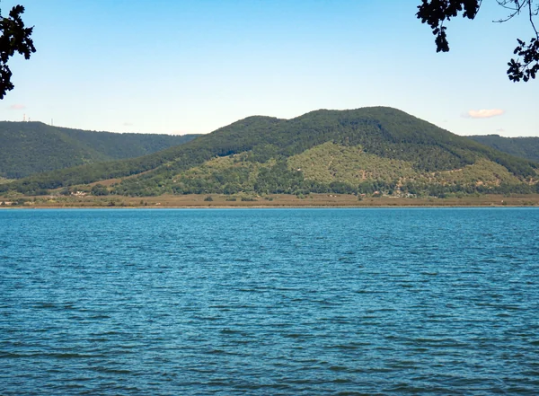
vico-monte-venere
Monte Venere fotografato dalla riva del lago di Vico. Paesaggio della zona; non la partenza del percorso.
Albarubescens — CC BY-SA 4.0Fonte e licenzaLa copertina descrive il contesto locale, non prova il punto di accesso o la percorribilità. Nessuna variante stagionale generata.

Monte Venere fotografato dalla riva del lago di Vico. Paesaggio della zona; non la partenza del percorso.
Albarubescens — CC BY-SA 4.0Fonte e licenza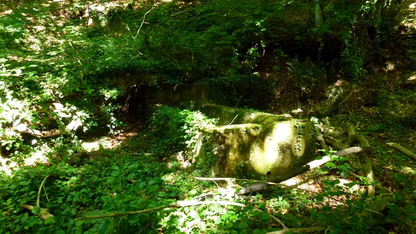
Fonte Petrella nella faggeta di Monte Raschio. Il fontanile è visibile nel bosco; non indica un accesso carrabile.
Dino Michelini — CC BY-SA 4.0Fonte e licenza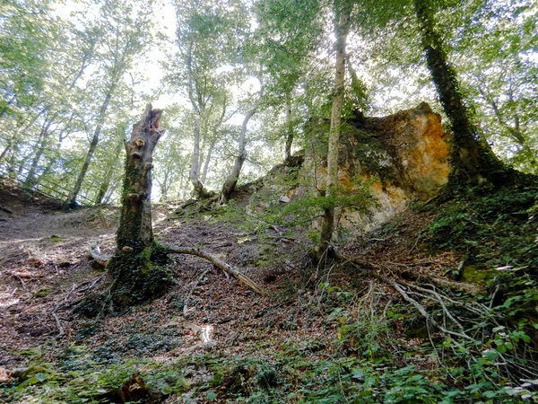
Faggeto di Allumiere, Cava del Silenzio. Rocce e faggi ben leggibili, luce naturale; nessuna città.
Albarubescens — CC BY-SA 4.0Fonte e licenza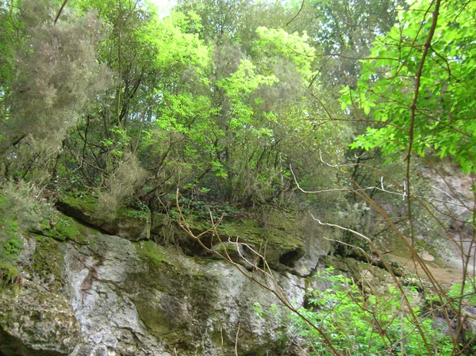
Cascata della Diosilla, nel contesto della Riserva Monterano e del percorso proposto; non un punto del Bicione geolocalizzato.
Patafisik — Public domainFonte e licenza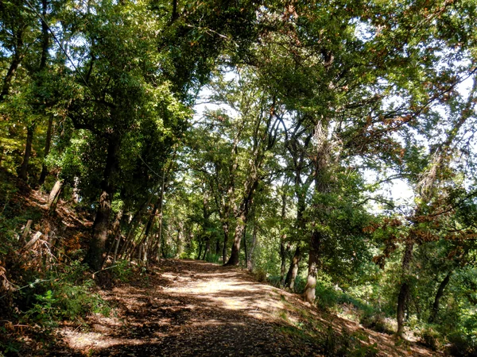
Sentiero a Monte Musino, fonte esplicitamente Sacrofano/Parco di Veio. Bosco e tracciato leggibili.
Albarubescens — CC BY-SA 4.0Fonte e licenza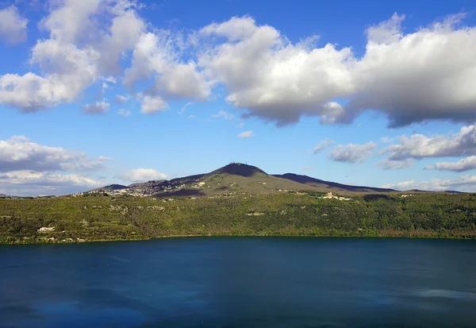
Monte Cavo visto da Castel Gandolfo. Copertina panoramica della montagna, non veduta dal sentiero Faete.
NikonZ7II — CC BY-SA 4.0Fonte e licenza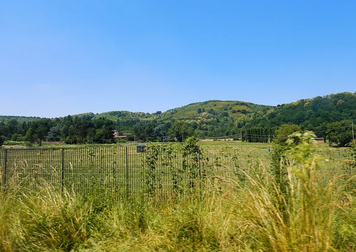
Pozzi di Doganella: prato e margine arboreo del sito nominato. Non si attribuisce questa radura al bosco interno del Cerquone.
Albarubescens — CC BY-SA 4.0Fonte e licenza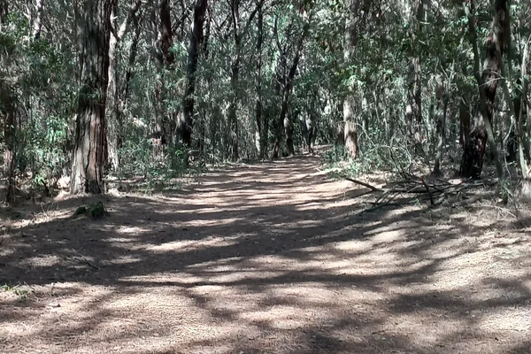
Foresta demaniale del Circeo. La fonte non specifica Cerasella/Verdesca: copertina del contesto forestale condiviso, non del singolo punto.
MasPro57 — CC BY-SA 4.0Fonte e licenza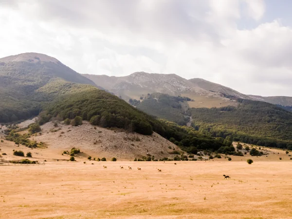
Prato di Campoli documentato dalla descrizione originale 500px; piana e faggete, cavalli sullo sfondo.
Giuseppe Pinto — CC BY-SA 3.0Fonte e licenza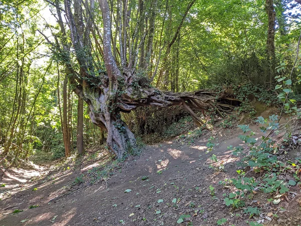
Castagni con radici esposte nel Parco dei Castelli Romani, fotografia georeferenziata a 751 m dal centro editoriale della traccia. Non attribuita al punto Fontan Tempesta.
Emanuele Petriglia — CC BY-SA 4.0Fonte e licenza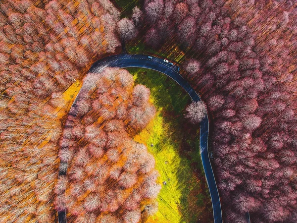
Faggeta autunnale e strada presso Le Vedute, Monte Livata. Ripresa aerea locale, 3,6 km dal centro editoriale della traccia; non satellite, non veduta dal sentiero Tufai.
Filippo Bussi — CC BY-SA 4.0Fonte e licenza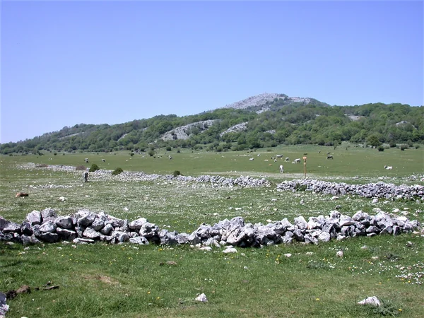
Pratone e Pizzo di Monte Gennaro: piana carsica e margine boschivo, luogo esplicitato nella fonte. Non la partenza da Roccagiovine.
V.lattanzi — CC BY 4.0Fonte e licenza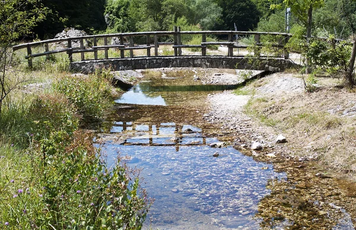
Sorgente del Melfa nella Valle di Canneto. Acqua e vegetazione locali; struttura del ponticello parte del luogo reale.
Spatuzzi Bruno — CC BY-SA 4.0Fonte e licenza